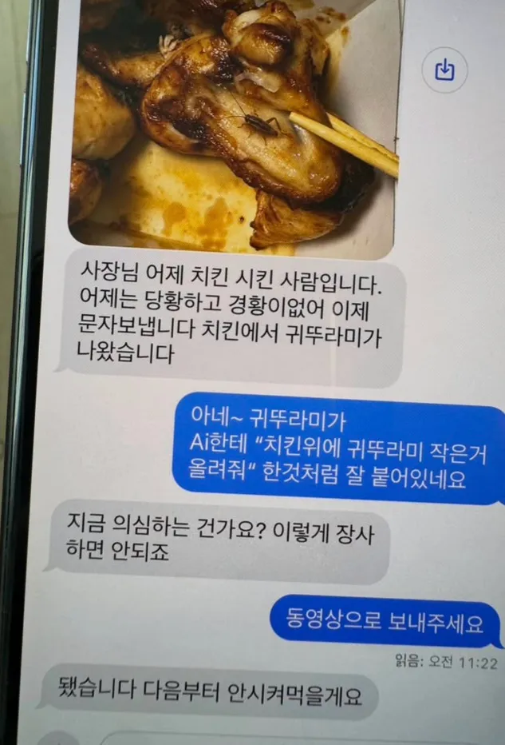

29 · 21 · 4 분 전 · 원문

수집 당시 댓글 21개
ᅠᅟᅠᅟᅟᅠᅠᅟᅠᅟᅟᅠ · 18 분 전
수박국밥 · 17 분 전
이건 지가 걸어올라간거잖아 ㅋㅋ
공산성 · 17 분 전
라고 폰으로 대화를 나누는 내용의 사진 만들어줘
↳ 답글 · 하이닉스270층 · 7 분 전
그런듯 ㅋㅋ
↳ 답글 · 두둠칫둠ㅅ · 방금 전
ai 잘알ㅋㅋ
진상은 저렇게 깔끔하게 안끝남
구굴 · 17 분 전
왜 보일러를 생각했지
GTA7 · 16 분 전
사실 이거도 ai임
↳ 답글 · 까치산 · 13 분 전
그구도
모닝프로틴 · 16 분 전
무고귀뚜라미
환각쟁이 · 15 분 전
폰뚜라미
모루겟소요 · 13 분 전
프차 본사에서 일하는데 요즘 저런사람 많다고함..
↳ 답글 · YouTubecom · 3 분 전
Ai가 진상들에게도 평등하게사용 가능하다보니 이런일이 발생한듯
Ai사진 맞을시 업무방해죄로 신고가능도록해야함
워독스 · 4 분 전
이것도 ai구만
커피색스타킹 · 3 분 전
라는 메시지까지도 AI
1루2틀3일4흘 · 3 분 전
폰을 스샷이 아니고 사진을 찍어놨다 -> AI
스피키 · 2 분 전
글도 AI고 댓글도 다 AI임
경기도남양주시진접읍 · 1 분 전
왜 폰으로 폰을 사진찍음? 병신 ai
영맨추 · 1 분 전
나도 ai임
커뮤질도못하는아싸 · 1 분 전
진짜 에지간해야지 딸배가 음식 죄다 오픈해서 풀밭에 두고 한 시간 동안 귀뚜라미 찾아 넣지 않는 이상 이게 가능한가 ㅋㅋㅋ
깐풍기 · 방금 전
그냥 문자내용 캡처하는 폼으로 해달라고 하면 안됨?
왜 죄다 이 형식이지
프레기온 · 방금 전
온 세상이 ai다
댓글
수집 당시 댓글 21개
ᅠᅟᅠᅟᅟᅠᅠᅟᅠᅟᅟᅠ · 18 분 전
수박국밥 · 17 분 전
이건 지가 걸어올라간거잖아 ㅋㅋ
공산성 · 17 분 전
라고 폰으로 대화를 나누는 내용의 사진 만들어줘
· 하이닉스270층 · 7 분 전
그런듯 ㅋㅋ
· 두둠칫둠ㅅ · 방금 전
ai 잘알ㅋㅋ
진상은 저렇게 깔끔하게 안끝남
구굴 · 17 분 전
왜 보일러를 생각했지
GTA7 · 16 분 전
사실 이거도 ai임
· 까치산 · 13 분 전
그구도
모닝프로틴 · 16 분 전
무고귀뚜라미
환각쟁이 · 15 분 전
폰뚜라미
모루겟소요 · 13 분 전
프차 본사에서 일하는데 요즘 저런사람 많다고함..
· YouTubecom · 3 분 전
Ai가 진상들에게도 평등하게사용 가능하다보니 이런일이 발생한듯
Ai사진 맞을시 업무방해죄로 신고가능도록해야함
워독스 · 4 분 전
이것도 ai구만
커피색스타킹 · 3 분 전
라는 메시지까지도 AI
1루2틀3일4흘 · 3 분 전
폰을 스샷이 아니고 사진을 찍어놨다 -> AI
스피키 · 2 분 전
글도 AI고 댓글도 다 AI임
경기도남양주시진접읍 · 1 분 전
왜 폰으로 폰을 사진찍음? 병신 ai
영맨추 · 1 분 전
나도 ai임
커뮤질도못하는아싸 · 1 분 전
진짜 에지간해야지 딸배가 음식 죄다 오픈해서 풀밭에 두고 한 시간 동안 귀뚜라미 찾아 넣지 않는 이상 이게 가능한가 ㅋㅋㅋ
깐풍기 · 방금 전
그냥 문자내용 캡처하는 폼으로 해달라고 하면 안됨?
왜 죄다 이 형식이지
프레기온 · 방금 전
온 세상이 ai다